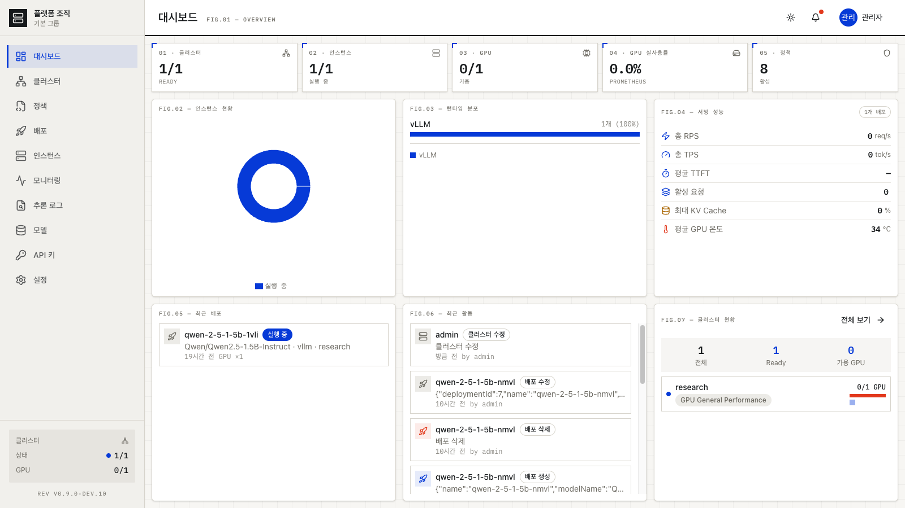
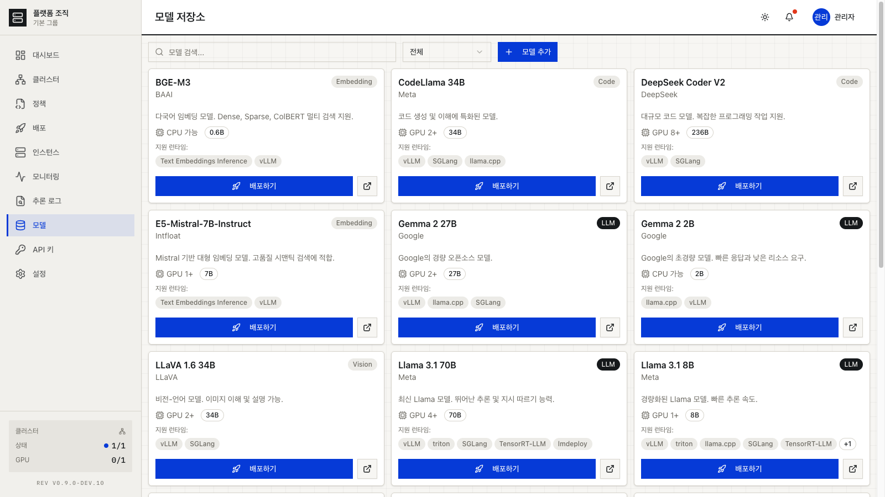
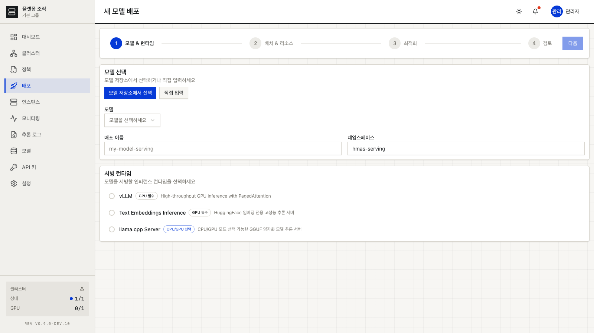
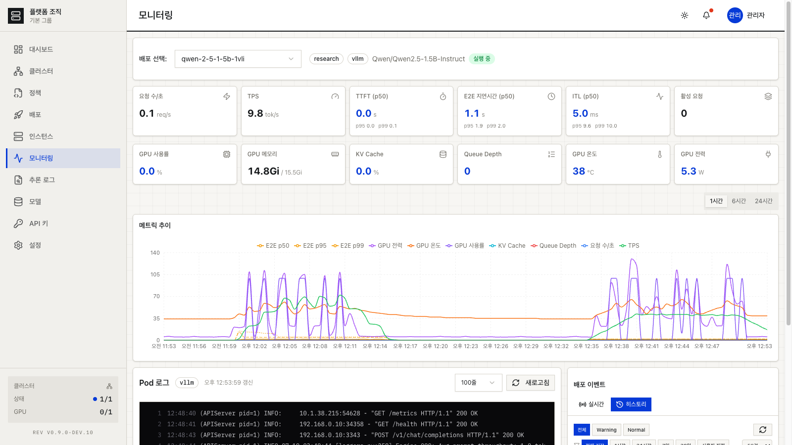

01
서버마다 따로
GPU 서버가 늘수록 접속할 곳도, 확인할 대시보드도 늘어납니다.
FIG.00 — AI SERVING, SHRINK-WRAPPED
ShrinkLabs는 여러 GPU 클러스터를 하나의 콘솔로 묶고, 모델을 하드웨어에 맞춰 배포하는 AI 서빙 플랫폼입니다. 웹에서 모델을 고르면 배치, 라우팅, 장애 복구는 ShrinkLabs가 맡습니다.

FIG.01 — PROBLEM
01
GPU 서버가 늘수록 접속할 곳도, 확인할 대시보드도 늘어납니다.
02
모델 하나를 올리려면 서버에 들어가 매니페스트를 고치고, 빈 GPU를 직접 찾아야 합니다.
03
아무도 호출하지 않는 모델이 GPU를 붙잡고 있어도 알아채기 어렵습니다.
FIG.02 — FEATURES
01 · CLUSTERS
여러 Kubernetes GPU 클러스터를 하나의 컨트롤 플레인에 등록합니다. NAT나 방화벽 뒤에 있는 클러스터도 연결할 수 있습니다.
02 · ENDPOINT
모델이 어느 클러스터에 있든 같은 /v1 엔드포인트로 호출합니다. API 키, RPM·TPM 제한, 스트리밍을 지원합니다.
03 · DEPLOY
모델을 고르면 Hugging Face 메타데이터를 자동으로 채우고, 4단계 마법사로 배포합니다. vLLM, TEI, llama.cpp 런타임을 지원합니다.
04 · FAILOVER
클러스터 장애를 감지하면 다른 클러스터로 서빙을 옮깁니다. 런타임 이미지는 미리 캐싱해 재배포를 앞당깁니다.
05 · OBSERVE
TPS, TTFT, GPU 사용률과 온도, 노드 실사용률, Pod 로그를 한곳에서 봅니다. 배포 실패는 알림 센터로 모입니다.
06 · ORGS
조직·그룹 단위로 자원을 나누고, 역할 기반 권한과 감사 로그로 누가 무엇을 했는지 남깁니다.
FIG.03 — CONSOLE FLOW



FIG.04 — ARCHITECTURE
ShrinkLabs는 vLLM 같은 검증된 추론 엔진을 대체하지 않습니다. 그 위에서 어느 클러스터에 올릴지, 요청을 어디로 보낼지, 장애가 나면 어디로 옮길지를 결정합니다.
SHRINKLABS CONTROL PLANE
NVLINK 클러스터
A100 · H100 대형 모델, 텐서 병렬표준 GPU 클러스터
RTX 5090 · L40S · L4 중소형 모델일반 KUBERNETES
Any 기본 스케줄링WORKS WITH — Kubernetes · vLLM · Prometheus
FIG.05 — FOR
수 대에서 수십 대의 GPU 서버를 하나로 묶어 쓰고 싶은 곳.
자체 모델을 서비스해야 하지만 인프라 엔지니어를 따로 두기 어려운 곳.
종류가 다른 GPU가 섞여 있고, 여러 사람이 함께 쓰는 곳.
FIG.06 — STATUS · REV 0.9.0 TECHNICAL PREVIEW
● 동작
○ 진행 중
매주 진행 상황을 주간 노트로 공유합니다.